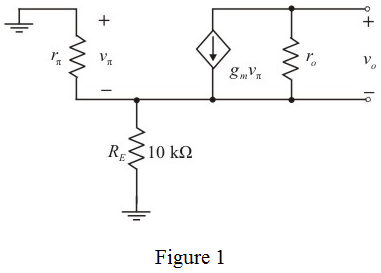

From Figure 1, calculate the output resistance.
Simplify further.

Therefore the output resistance is, .
Refer to Figure P7.78 in the textbook for the circuit diagram.
Draw the small signal equivalent.

Apply Kirchhoff’s voltage law at the base to emitter far end.
Calculate the trans-conductance.
Calculate the input resistance of the transistor.
Calculate the output resistance of the transistor.
From Figure 1, calculate the output resistance.
Simplify further.
Therefore the output resistance is, .